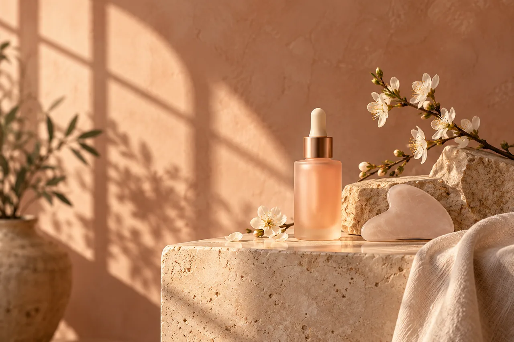

SKIN. STILLNESS. YOU.Dein Moment.
Dein Moment.
Dein Ritual.
Ein Ort zum Ankommen. Kleine Rituale, bewusst gewählte Pflege und Zeit nur für dich.
A little pause. A softer day.
THE ART OF TAKING A MOMENTZeit für dich✧Bewusste Pflege✧Ein ruhiger Moment
FIND YOUR RITUAL
Was tut dir heute gut?
Wähle eine beispielhafte Behandlung. Diese Demo nimmt keine Buchung entgegen.
Dein ausgewähltes Ritual wird hier angezeigt.